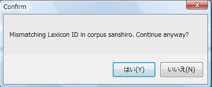

KWIC検索結果はChaKi.NET独自のXML形式で保存することができます。メニューから"File" - "Save"または"Save As..."をクリックします。ファイルの保存ダイアログが表示されますので、ファイルの種類が"Chaki files(*.chaki)"となっていることを確認して、名前を付けて保存します。
この.chaki形式は、旧ChaKiの形式とは異なります。
保存したKWICリストのロードは、メニューの"File" - "Open..."で同様に行いますが、ここで、保存した時と同じコーパス（少なくとも語彙のIDがセーブ時と不変であるようなコーパス）が存在している必要があります。これは、.chakiファイル（XML形式）にはLexemeのIDしか保持していないためです。ロード時には、.chakiファイルの中に記録されたファイルパス(SQLiteの場合）またはサーバ（それ以外の場合）からコーパスをオープンし、そのコーパスの持つLexicon IDと.chakiファイルの持つLexicon IDが一致しているかどうかがチェックされ、不一致の場合は警告が表示されます（下図）。無視してロードすることはできますが、一般には正しくロードされません。

KWIC検索結果の保存の目的は、検索された文番号と中心語位置のリストを保存して、KwicViewを復元することにあります。従って、係り受けやアノテーションなどDB内で管理される情報は含まれません。